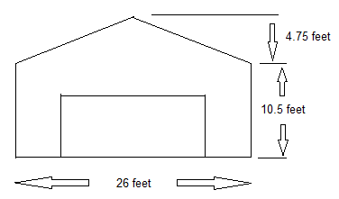
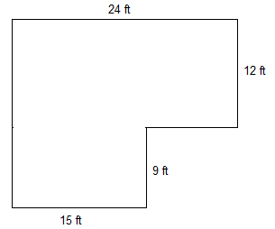
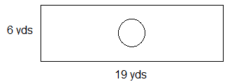
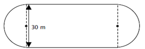
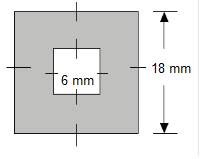
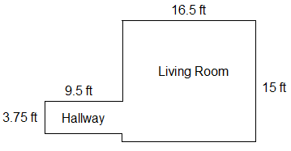

Measurement and Geometry Unit
3.5 Perimeter and Area
- You want to give the front of your garage a new coat of paint. All of the siding needs to be painted except for the garage door. The door is 7 feet high and 16 feet wide.
- How many square feet of siding will you be painting? 
- A quart of paint covers 80 square feet and you have 222.75 square feet to paint. How many quart-size cans of paint do you need to buy?
- One quart of paint costs $11.64. How much is the total cost of the paint that you need to buy?
- The tax rate in Knoxville is 9.25%. How much is the total cost including taxes?
Guided Solution:
Area of Rectangle Area of Triangle Area of the Garage Door \(\begin{equation} A=L W \end{equation} \)
\(\begin{equation} A=26 \cdot 10.5 \end{equation}\)
\(\begin{equation} A=273 \text{ ft}^{2} \end{equation}\)
\(\begin{equation} A= \frac{1}{2}bh \end{equation} \)
\(\begin{equation} A=\frac{1}{2} \cdot 26 \cdot 4.75 \end{equation} \)
\(\begin{equation} A=61.75 \text{ ft}^{2} \end{equation} \)
\(\begin{equation} A=L W \end{equation}\)
\(\begin{equation} A=16 \cdot 7 \end{equation}\)
\(\begin{equation} A=112 \text{ ft} ^{2} \end{equation}\)
Area to be painted = Area of rectangle + Area of triangle - Area of door
\begin{equation} 273+61.75-112=222.75 \end{equation}
Area of siding to be painted = \begin{equation} 222.75 \text{ ft}^{2} \end{equation}
\(\frac{222.75\;ft^2}{1\;garage}\times\frac{1\;can}{80\;ft^2}=2.78\;cans\)
You need to purchase 3 quarts of paint.
\($11.64 \times 3 = $34.92\)
\($34.92 \times 0.0925 = $3.23\)
\($34.92 + $3.23 = $38.15\)
- Your backyard currently has no grass. You want to seed your backyard and enclose it with a fence for your dog.
- Determine the perimeter of your backyard.
- If chain link fencing costs $14 per foot installed, how much will it cost to enclose your backyard?
- Determine the area of your backyard.
- If the cost of Kentucky blue grass seed is $0.03 for 1 square foot, how much will the seed for the backyard cost?
\(24+12+9+9+15+21=90 ft\)
\(90 \times 14 = $1260\)
\(24 \times 12 + 15 \times 9 = 423\; ft^2\)
\(423 \times 0.03 = $12.69\)
- You have a rectangular driveway with a circular garden in the middle of it.

- Determine the perimeter and area of your rectangular driveway.
- The circular garden has a radius of 2 yards. Determine the area of the garden.
- Your driveway is cracked and needs repaving. Calculate the area of the driveway that would be covered with new asphalt.
- If it costs $20.70 to repave each square yard with asphalt, then how much would you pay to repave your driveway?
\(P = 6+6+9+9 =\) 50 yards
\(A = 19 * 6 =\) 114 square yards
\( \begin{equation} A=\pi r^{2} \end{equation} \)
\( \begin{equation} A=\pi \text { * 2}^{2} \end{equation} \)
The area of the garden is 12.57 square yards.
The area of the garden is 12.57 square yards
The area of the entire driveway is \(A=lw=19 \times 6 = 114\; yds^2\)
\(114-12.57=101.43\)
The area to be covered by the new asphalt is 101.43 square yards.
\(101.43 \times $20.70 = $2099.60\)
- The track pictured below encloses a grass field. Each long straight on the track measures 150 meters.

- Find the perimeter of the field.
- Find the area of the field.
To find the perimeter of the field, you must find the circumference of the circle and add the two long straights.
Circumference of the circle: \( \begin{equation} C= \pi d \end{equation} \)
\( \begin{equation} C=30 \pi \end{equation} \)
C = 94.25 m
Two long straights: \(150+150=300\;m\)
Perimeter: \(94.25+300=394.25\;m\)
Area of circle:
\( \begin{equation} A= \pi r^ {2} \end{equation} \)
\( \begin{equation} A= \pi (15)^ {2} \end{equation} \)
\( \begin{equation} A=225 \pi \end{equation} \)
The area of the circular part of the track is 706.86 square meters.
Area of rectangle:
\( \begin{equation} A=LW \end{equation} \)
A = 150 * 30
The are of the rectangular part of the track is 4500 square meters
The total area of the track is 4500 + 706.86 = 5206.86 square meters
- Find the area of the shaded region of the square with a square hole. 
- Addison wants to replace the old vinyl flooring in her living room and hallway with wood flooring. The dimensions of her hallway and living room floors are shown in the diagram.

- Find the total area that will be replaced with wood flooring.
- The planks in each box of wood flooring at the store will cover an area of 40 square feet. How many boxes does Addison need to buy?
- If one box costs $175.60, how much will the wood for the flooring project cost?
- Contractors usually factor in 5% waste for a wood flooring project. How many square feet of wood flooring will probably be wasted in Addison’s project?
\(A = 3.75 \times 9.5 + 16.5 \times 15 = 283.125ft^2\)
\(\frac{283.125\;ft^2}{area}\times\frac{1\;box}{40\;ft^2}=7.078125\;boxes \)
Addison needs to buy 8 boxes of wood flooring.
\(8 \times $175.60 = $1404.8\)
\(8 \;boxes \times 40 = 320\;ft^2\)
\(0.05 \times 320 = 16\; \text {square feet of waste}\).
Area of the big square: \(A=lw=18^2=324 \;mm^2\)
Area of the little square: \(A=lw=6^2=36 \;mm^2\)
\( \begin{equation} A = 324 - 36 \end{equation} \)
The area of the shaded regions is 288 square millimeters